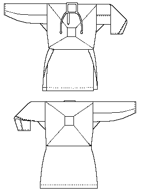
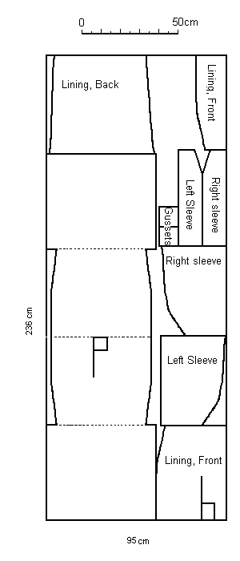

This linen "shirt" was uncovered during an excavation at Viborg, in Denmark. The shirt is folded without shoulder seams, the torso seamed at the sides, while the skirting is not seamed together. The torso is lined, with the lining, comprised of the same linen as the shirt, held in place and strengthened by the trapezoidal stitching on the front and back. The garment is presumed to have had long sleeves, but nothing absolute can be proven.
There is a lining around the neck that continues into two ribbons. There are eight different seam types each sewn with a different type of stitching: back stitch, whip stitch, running stitch and through overcast stitching.
(n.b., for a much more complete discussion of this garment, you are encouraged to see An 11th century linen shirt from Viborg Sondors�, Denmark", by Mytte Fentz, or An 11th century line shirt from Viborg by Mytte Fentz, or the translation by Maggie Mulvaney.)

The Viborg shirt was made from a tabby woven, single ply Z-spun linen thread. The warp threads are a little thicker and somewhat more tightly spun than the weft threads. The cloth was very evenly woven.
Return to Contents.
Some Clothing of the Middle Ages -- Shirts/Smocks -- Viborg Shirt, by I. Marc Carlson, Copyright 1997. This code is given for the free exchange of information, provided the Author's Name is included in all future revisions, and no money change hands-